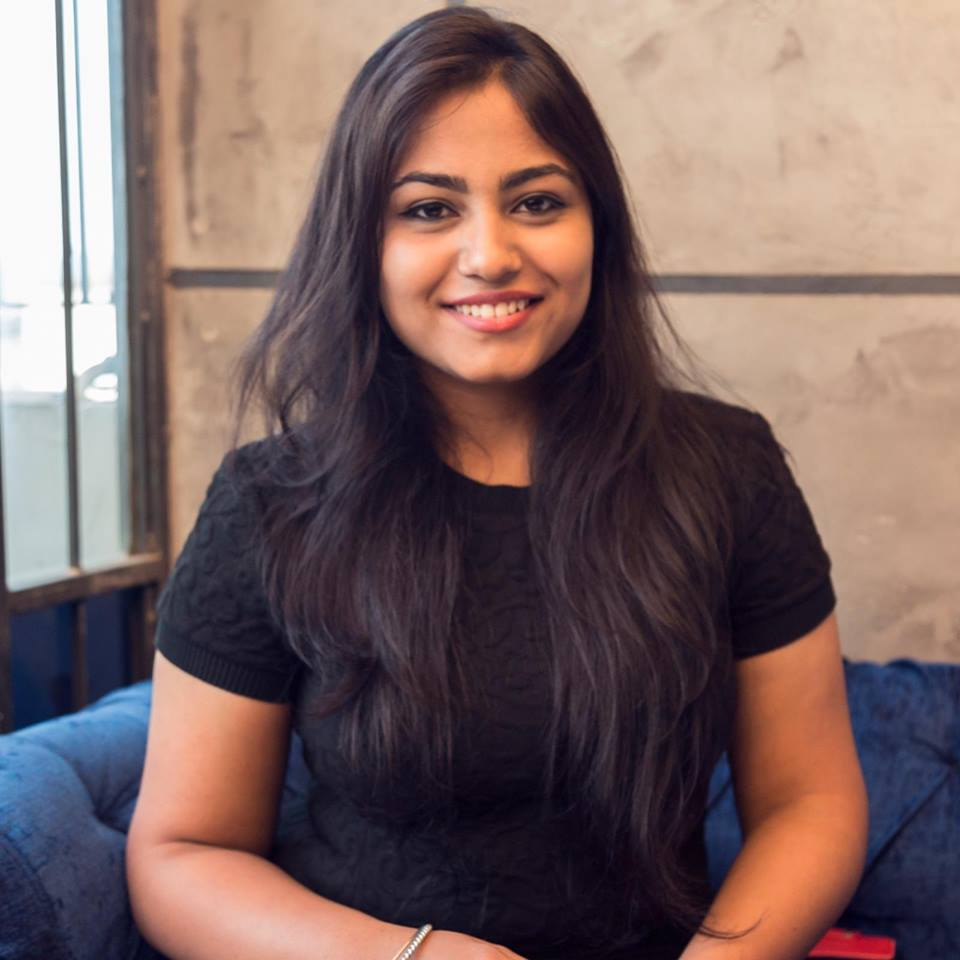
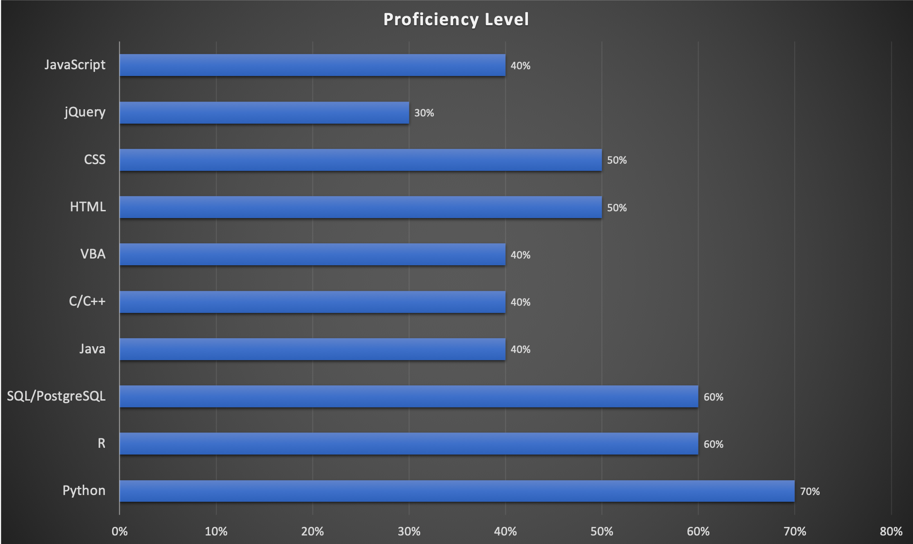

Home
- Graduate student pursuing M.Sc. in Information Studies at McGill University to become an information scientist.
- Actively looking for a job as a Data/Business Analyst.
- Diligent team worker who likes to take initiatives and lead on innovative approaches for a task in hand.
Extra-Curricular
- Treasurer at McGill Information Studies Student Association.
- Project Manager at InfoNexus, McGill.
- Hobbies: Reading Books, Playing Badminton, Yoga.
Education
M.Sc. Information Studies, Sep, 2017-Present
McGill University
CGPA-3.5/4
B.Eng (Hons.) in Electronics 2013-2017
and Communication,
Rajasthan Technical University
Completed coursework with the 2nd highest percentage of 80.02% in Department of Electronics and Communication.
Relevant Coursework
Data Science, Information Retrieval, Information Security, Web System and Design, Data Mining and Database Design and Development
Skills

Work Study Experience
Oxfam, Quebec January 2019-March 2019
Knowledge Management Intern
- To Propose concrete ideas to support knowledge management in Youth Active Citizenship Community (YAC). Communicating with Oxfam Great Britain and Oxfam Novib to assist them in knowledge management of the information available. Propose arborescence for the classification of the Oxfam Cloud of the YAC.
- Proposed forming a Facebook and Instagram Business page for the purpose of increasing awareness and maximum reach out to the youth. Responsible for creating, structuring and handling the business accounts for the YAC on Instagram and Facebook.
Schulich School of Music September 2018-April 2019
McGill University
IT Assistant
- Responsible for maintaining the Undergraduate Computer Science Lab. Constant examination of the Server and OS and application on the systems. Testing and understanding new software like MIDI, Audacity, SourceTree before installing and giving demos to students upon request.
- Hands-on UNIX to maintain the OS, creating iOS images for each course requirements on OS and writing scripts to erase all personal information after the end of a session, for security purpose of students. Helping the supervisor to host websites on the server using UNIX and Virtual Machine for various courses.
Atwater library, Montreal December 2017-February 2018
Computer Center Assistant
- Designing and maintaining a database system of the library using SQL and Microsoft Access. Proposed the shift from excel sheets to an online database. Created Switchboards for better user interface experience.
- Proposed website homepage prototype for the library using HTML, CSS, JavaScript.
Readmore...
Readless..
INTERNSHIPS
Airport Authority of India, June, 2016-July, 2016
Jaipur
Trainee
- Helped in air navigation and communication process at an airport facility.
- Passed a proficiency exam with distinction using the skills developed during the training.
ISRO NRSC, Jodhpur June, 2016-July, 2016
Trainee
Temperature and Humidity Sensor
- Designed a temperature and humidity sensor to observe the weather details.
- Used Bluetooth to connect the device with cellular phone.
- Transmitted the observed data using mobile application, collected data from different parts of the country, to the base of NRSC, ISRO, Jodhpur.
Khas Khabar, Jaipur January, 2016-June, 2016
Relation Assistant (HR Dept.)
- Assisted in conducting meetings and planning sessions.
- Kept calendar and contact lists and provided with a researched reports for the meetings.
NBC, Jaipur February, 2015-March, 2015
Trainee
- Experienced the professional environment of the company and communicated with the dealers of the company to explain newly launched designs
Volunteer Experience
Computer center assistant Dec, 2017-Feb,2017
Atwater Library and
Computer Center
Jyotirmay Vena Vandini Nov, 2015
Sikhsha Samiti
Trainee
Projects
Cross-Topic Authorship Analysis Jan 2019-Present
(Data Mining and Security Lab, McGill)
- Analyzing text to identify the authors of the sample text on different topics using python and machine learning methods like SVM, Naïve Bayes, regression with/without embedding and stylometric representation
- Improving the accuracy of the single topic authorship analysis and expanding the research to emotion sensing by the sample text collected on websites like Twitter.
Analyzing traits of breast cancer (McGill) Jan 2019-Present
(Data Science- Course Project)
- Using R programming language to analyze characteristics of Breast Cancer to predict the nature of cancer by implementing machine learning methods like prediction, linear regression, classification, clustering
- Research to serve as a supplement for advanced application in the medical industry.
Achievements
- Letter of appreciation by the Education Minister of India for outstanding performance in 10th grade.
- Academic Excellence Award in freshman year of college.
- Academic Excellence Award in sophomore year of college.